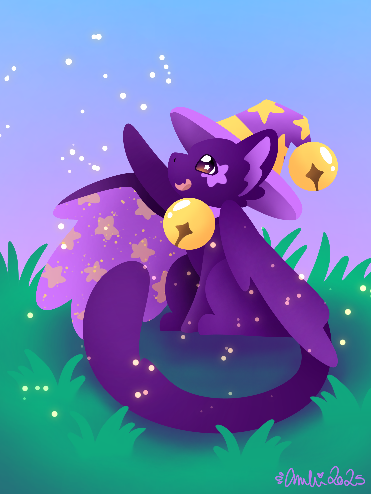
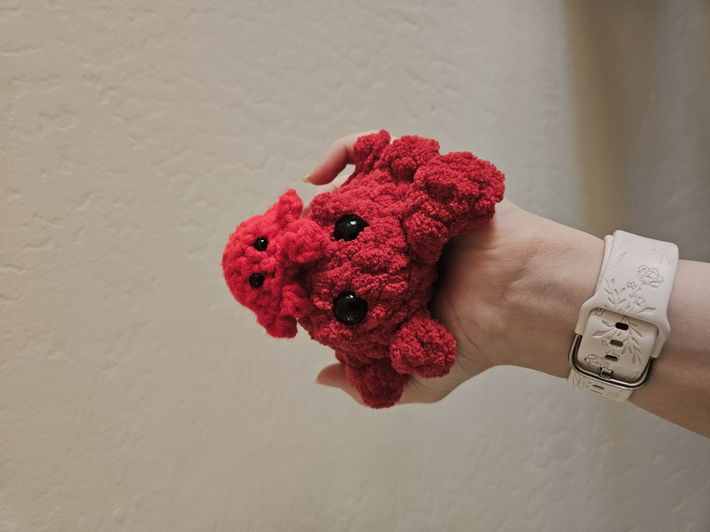

Throughout my life, I have been considered a very creative person. When I was little, I loved to draw and make things out of Play Dough. When I got older, I continued to draw and even started experimenting with digital art. I also loved to sculpt things out of clay. Branching away from just physical arts, I found a love for reading and writing. I came up with many characters and stories for each one of them, hoping to one day write a book. Alongside reading and writing, I also discovered a deep passion for music.

Music has always been a big part of my life. From wandering around my backyard singing a tune I had come up with to playing piano and trombone, I have always loved to listen, play, and create music. Allowing my creativity to shine, I have composed pieces and arrangements for me and my siblings to perform in church.
Through every moment of my life, I am constantly trying to create something and let my creativity show. However, none of this would have been possible without the support of my parents. Without their constant support from buying me new crayons and paper to supporting my more recent crochet hobby, they have always been there to help me shine.
